① 하던 일은 이어서, 모델은 처음에
영상은 먼저 두 회사의 공식 문서를 나란히 펼쳐 놓고 시작해요. 왼쪽이 Claude Code 문서의 Best practices, 오른쪽이 Codex 문서의 Best practices예요. 노란 형광펜 부분이 이 영상이 일곱 가지로 묶어 낸 문장들이에요.
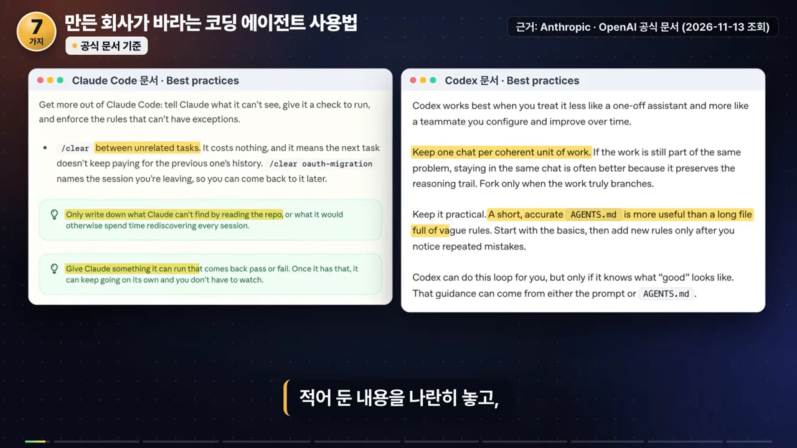
에이전트는 매번 처음부터 다시 읽어요
에이전트는 메시지를 보낼 때마다 시스템 안내, 규칙 파일, 지금까지 주고받은 메시지를 전부 다시 읽어요. 아래 화면 가운데 막대가 '매번 읽는 양'이에요. 메시지 1, 2, 3으로 갈수록 막대가 길어지고, 지난번과 똑같은 앞부분(오른쪽 아래 '저장해 둔 앞부분')은 프롬프트 캐시에서 꺼내요.
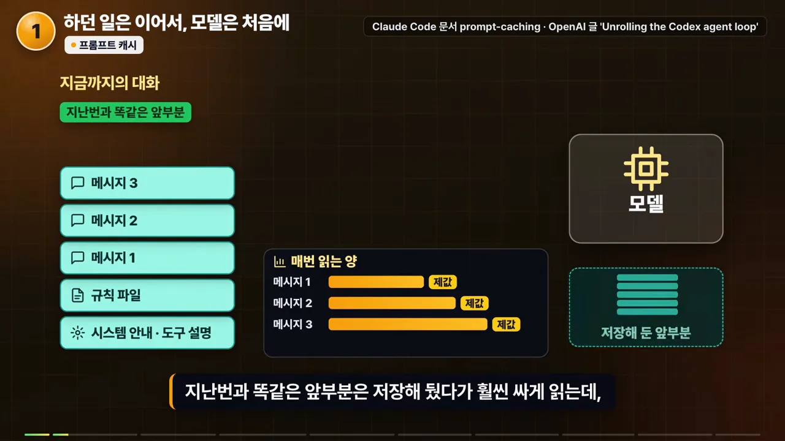
캐시에서 읽으면 원래 값의 10% 이하만 내요. 대신 캐시에는 수명이 있어요. 화면 위쪽 인용문이 Claude Code 문서의 해당 문장인데, 구독이면 약 1시간, API(Application Programming Interface) 키로 쓰면 5분이에요. 아래 줄의 비행기 아이콘처럼 메시지를 보낼 때마다 시간이 다시 채워져요. 한참 자리를 비우면 오른쪽 끝처럼 캐시가 만료되고, 돌아온 첫 메시지에서 전체를 제값으로 다시 읽어요.
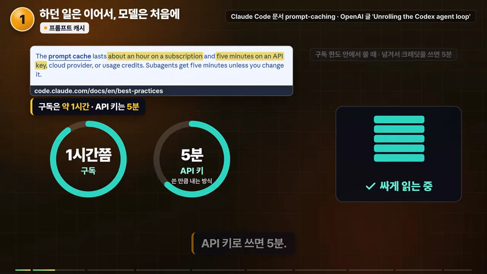
모델을 바꾸면 캐시가 비어요
캐시는 모델마다 따로 있어요. 아래 화면에서 대화 도중 모델을 A에서 B로 바꾸면 '모델 A의 캐시'는 차 있지만 '모델 B의 캐시'는 비어 있어요. 내용이 똑같아도 처음부터 다시 읽는 거예요. 터미널 창에는 Claude Code가 모델을 바꿀 때 띄우는 경고(다음 응답이 느리고 토큰을 더 쓴다)가 보여요.
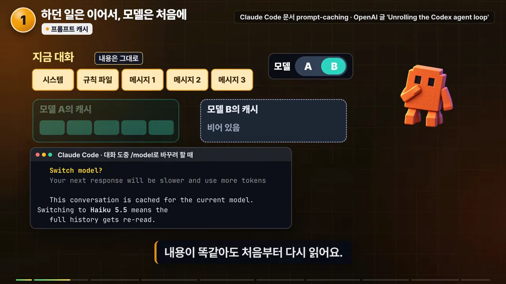
Codex도 같은 원리예요. 앞 내용은 건드리지 않고 끝에 덧붙이기만 하도록 만들어져 있어요. 그래서 두 도구에서 할 일이 이렇게 정리돼요.
- Claude Code: 세션을 시작할 때
/model로 모델부터 정해요. - Codex: 대화 도중에 모델이나 권한 설정을 바꾸지 않아요.
- 오래 쉬었다 왔는데 이전 내용이 필요 없다면 새 대화로 시작하는 쪽이 더 싸요.
② 대화 하나에 일 하나
한 대화에서 일을 여러 개 하면 어떻게 될까요. 아래 화면은 로그인 버그, 결제 화면, 문서 작성을 한 대화에서 끝낸 뒤 네 번째 일을 시키는 상황이에요. 턴 1, 2, 3마다 빨강·주황·보라 막대(지난 일 세 개)를 매번 다시 읽고, 정작 지금 필요한 부분은 오른쪽 청록 막대뿐이에요.
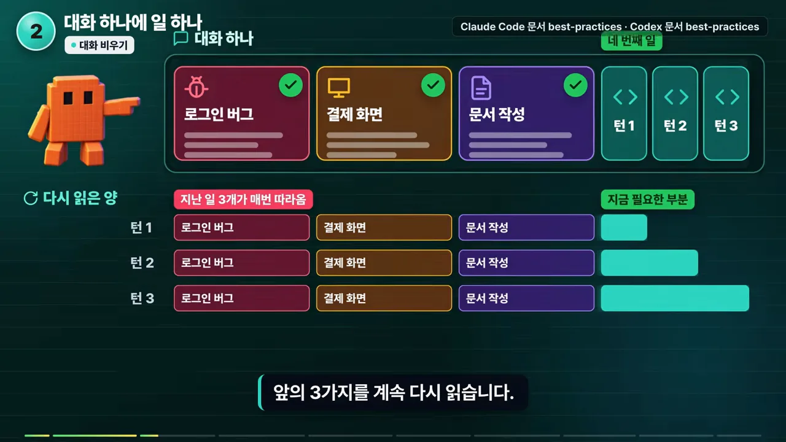
요즘 모델은 대부분 컨텍스트 창이 100만 토큰이라 넘칠 걱정은 적어요. 그래도 Anthropic은 관계없는 일로 넘어갈 땐 대화를 비우라고 해요. 사용량이 줄고, 지금 일에만 집중된 대화에서 답도 더 좋아진다는 이유예요.
OpenAI는 이걸 아예 '흔한 실수' 목록에 올렸어요. 아래 화면 맨 아래 형광펜 줄이 그 항목이에요. 프로젝트 전체를 대화 하나로 끌고 가면 내용이 불어나 갈수록 결과가 나빠진다는 내용이에요.
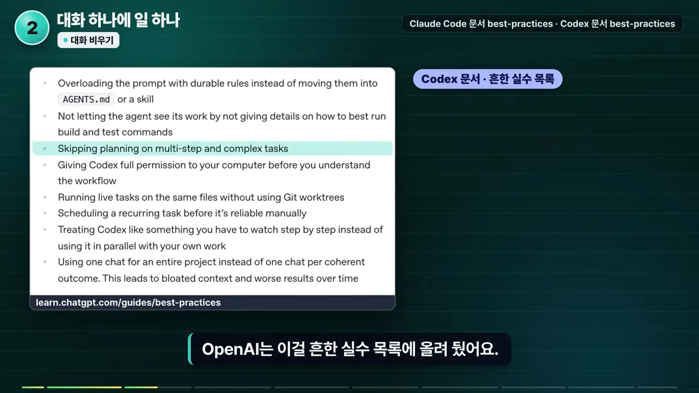
같은 문제라면 머무르세요
반대로 같은 문제를 계속 다루는 중이라면 그 대화에 머무는 편이 나아요. 화면의 증상 → 가설 → 확인 → 수정 흐름처럼, 지금까지 판단한 과정이 대화에 남아 있기 때문이에요.
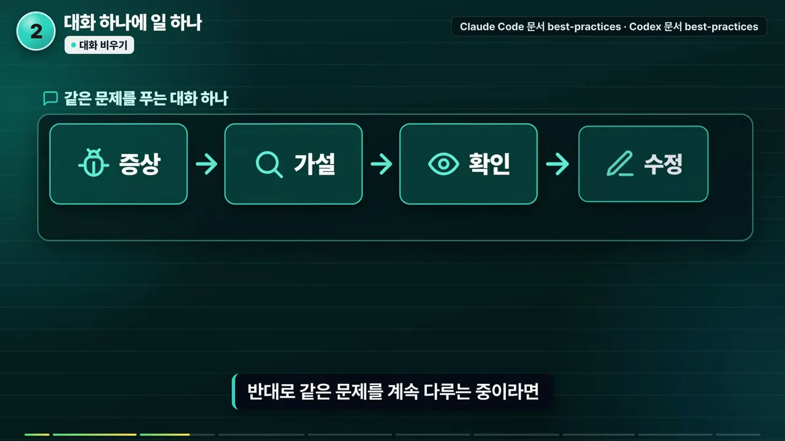
새 대화를 여는 명령은 도구마다 달라요. 화면 아래 '이렇게 해 보세요' 상자에 두 줄로 정리돼 있어요. Claude Code는 일이 바뀌면 /clear, Codex는 /new예요.
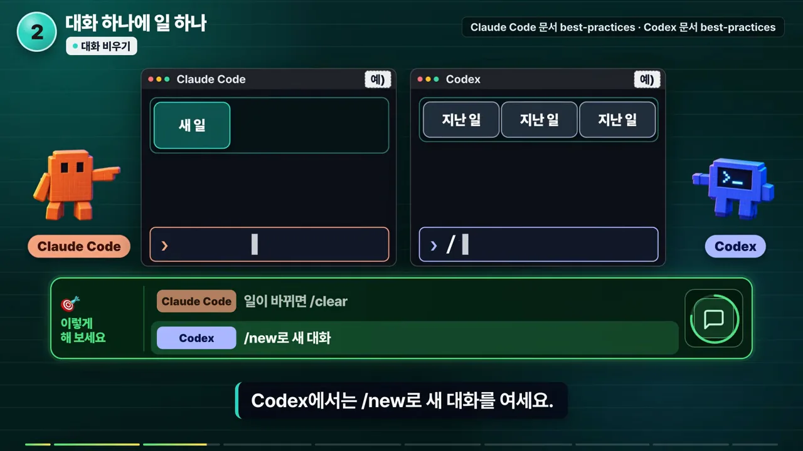
③ 규칙 파일은 짧게
새 대화를 열면 이전 대화는 따라오지 않아요. 대신 대화를 시작할 때마다 자동으로 읽는 규칙 파일이 있어요. Claude Code는 CLAUDE.md, Codex는 AGENTS.md예요. 무엇을 얼마나 적느냐에 대한 두 회사의 답은 같아요. 짧게예요.
Anthropic은 200줄 아래를 권해요. 아래 화면 오른쪽 인용문이 Claude Code 문서의 해당 문장이에요. 왼쪽 그래프는 긴 파일(빨강)이 대화마다 자리를 많이 차지하고, 짧은 파일(초록)은 적게 차지한다는 걸 보여 줘요. 길어질수록 지시는 오히려 덜 지켜져요.
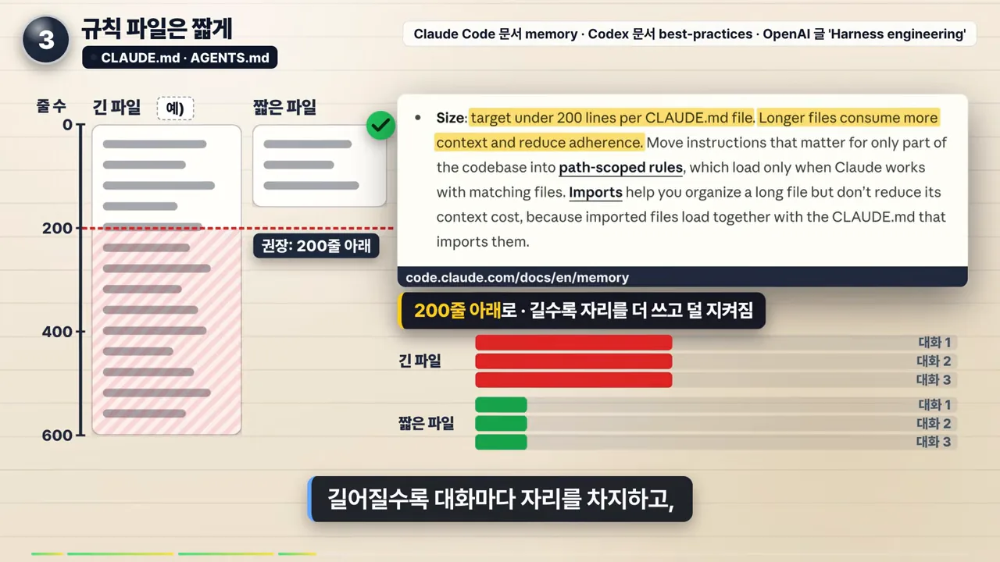
OpenAI도 길고 모호한 파일보다 짧고 정확한 파일이 낫다고 해요. 자기 프로젝트 사례도 밝혔어요. 아래 화면처럼 AGENTS.md에는 설계 문서, 실행 계획, 제품 스펙 세 줄만 두고, 자세한 내용은 docs/design-docs/, docs/exec-plans/, docs/product-specs/ 폴더로 연결해요.
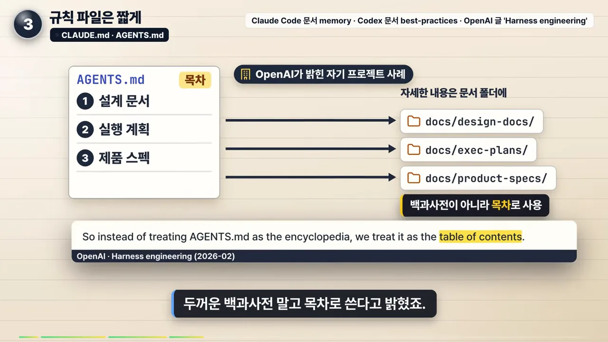
무엇을 적을까요
영상이 드는 예시는 세 종류예요. 아래 화면의 규칙 파일 1~3번 줄이 각각에 해당해요. 4번 줄의 '환불은'처럼 처음부터 다 채우지 말고, 작업 중 같은 실수가 두 번 나오면 그때 한 줄을 더해요.
| 적을 것 | 화면의 예 |
|---|---|
| 테스트를 실행하는 명령 | 테스트: npm test |
| 코드만 봐서는 오해하기 쉬운 부분 | 금액은 원 단위 정수 (소수 금지) |
| 두 번 고쳐 준 실수 | 날짜는 UTC(Coordinated Universal Time)로 저장 |
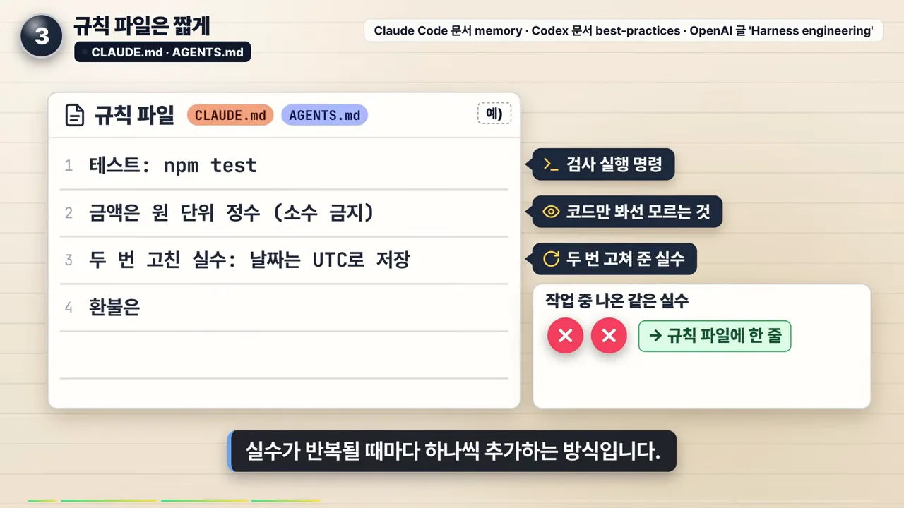
두 문서가 다른 점: 폴더 구조 설명
폴더 구조 설명만은 두 회사 답이 달라요. 아래 화면 오른쪽 위에 Codex 문서 문구(repo layout and important directories)가 있고, AGENTS.md의 '폴더 구조 설명' 칸에는 초록 체크가 붙어 있어요. Codex 문서는 넣으라고 하고, Claude Code 문서는 에이전트가 저장소를 직접 읽으니 빼도 된다고 해요.
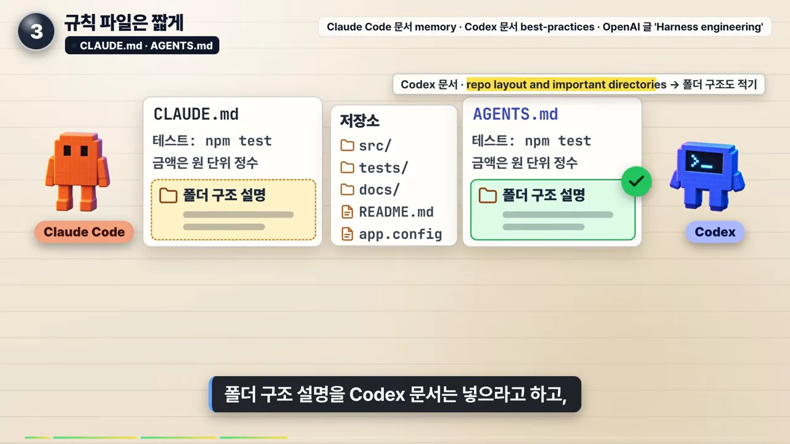
- Claude Code:
/init으로 초안을 만든 뒤 필요 없는 줄을 지워 나가요. - Codex: 같은 실수가 두 번 나오면
AGENTS.md에 규칙을 한 줄 추가해요.
④ 설정과 지식은 정해진 폴더에
설정 파일이 어디에 놓이는지 알아 두면 헷갈릴 일이 줄어요. Claude Code부터 볼게요. 아래 화면처럼 프로젝트 맨 위에 매 세션 읽는 규칙 CLAUDE.md가 있고, 그 옆 .claude/ 폴더에 나머지가 모여요.
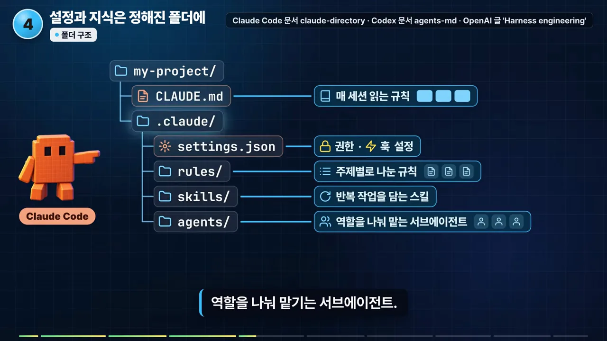
settings.json은 권한과 훅, rules/는 주제별 규칙, skills/는 반복 작업, agents/는 서브에이전트예요. 영상 03:53에서 보기내 컴퓨터 홈 폴더에도 같은 이름의 ~/.claude/ 폴더가 있어요. 아래 화면처럼 여기 둔 CLAUDE.md, settings.json, rules/는 project-b, my-project 같은 모든 프로젝트에 적용돼요.
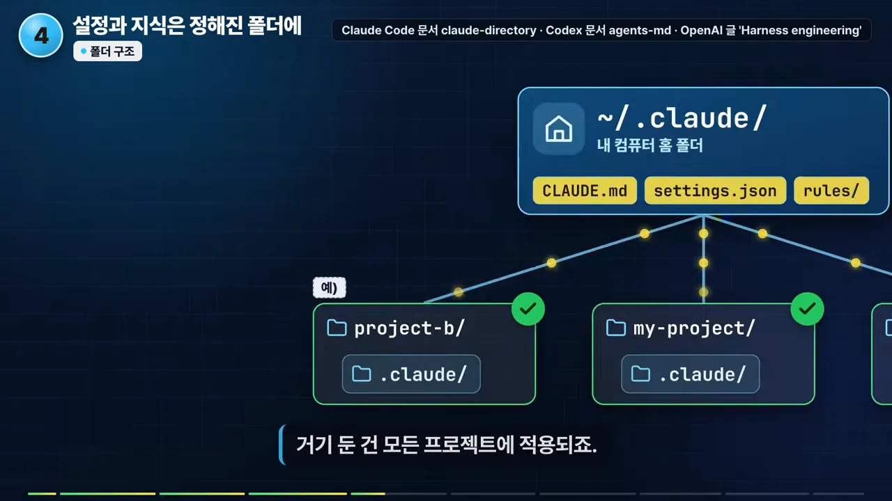
다 채울 필요는 없어요. 화면 오른쪽 인용문이 Claude Code 문서의 해당 문장인데, 대부분은 CLAUDE.md와 settings.json 두 개만 만진다고 적혀 있어요. 나머지 폴더는 흐리게 처리돼 있고 '나머지는 필요할 때 추가'라는 꼬리표가 붙어 있어요.
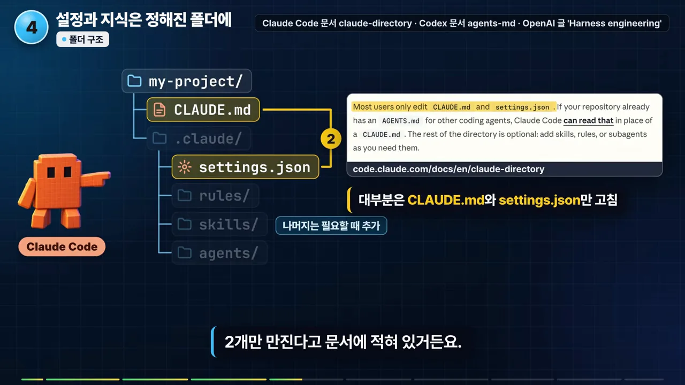
Codex의 폴더 구조
Codex도 닮았어요. 두 도구를 나란히 놓으면 이렇게 대응돼요.
| 역할 | Claude Code | Codex |
|---|---|---|
| 매 세션 읽는 규칙 파일 | CLAUDE.md | AGENTS.md |
| 설정 | .claude/settings.json | .codex/config.toml |
| 스킬 | .claude/skills/ | .agents/ 폴더 (여럿이 같이 써요) |
규칙 파일은 안쪽 폴더에도 둘 수 있어요. 아래 화면에서 my-project/AGENTS.md는 저장소 전체 규칙, services/payments/AGENTS.md는 그 폴더 규칙이에요. Codex는 지금 작업하는 곳(노란 '작업 위치')에 더 가까운 파일을 우선해요.
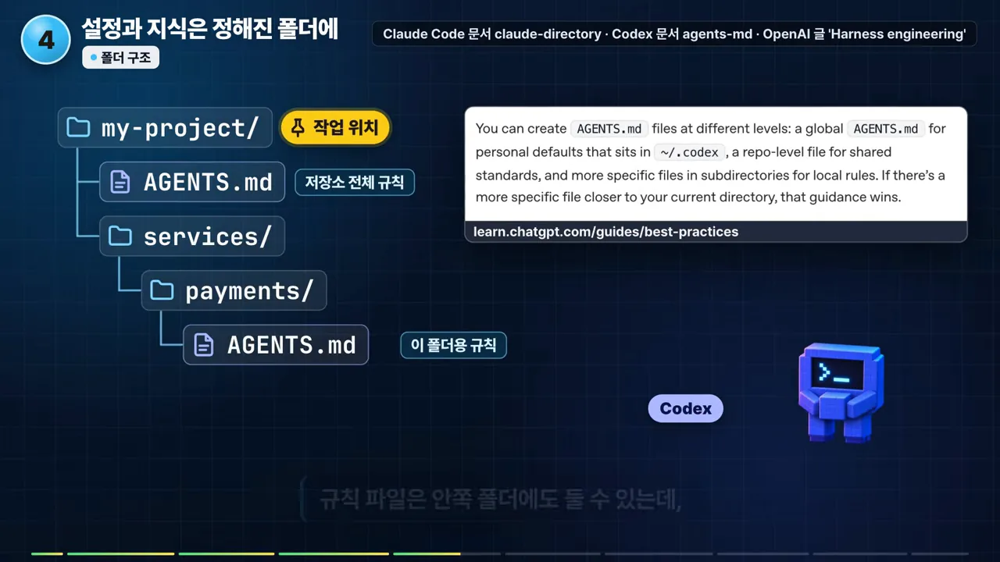
볼 수 없는 지식은 없는 것과 같아요
OpenAI가 하나 더 강조하는 게 있어요. 아래 화면에서 둥근 테두리 안이 '에이전트가 볼 수 있는 범위'예요. 저장소 안의 AGENTS.md, ARCHITECTURE.md는 보이지만, 바깥의 메신저 대화, 회의 메모, 머릿속 생각은 실행 중에 보이지 않아요. 그래서 OpenAI는 그런 결정을 저장소 안 문서 폴더로 옮겨 뒀대요.
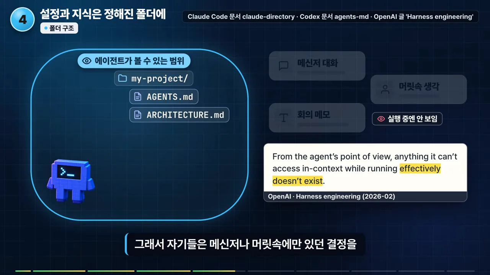
시작점은 단순해요. Claude Code는 CLAUDE.md와 .claude/settings.json부터, Codex는 AGENTS.md 하나부터면 충분해요.
⑤ 어려운 일은 계획부터
버튼 글자를 바꾸는 정도의 간단한 수정은 그냥 시켜도 돼요. 완벽한 프롬프트가 필요한 건 아니라고 두 회사 모두 말해요. 문제는 여러 단계가 걸리는 일이에요. 아래 화면처럼 목표 깃발과 다른 방향으로 1~6단계를 쌓아 가면, 시간과 토큰을 다 쓴 뒤에 통째로 다시 해야 해요.
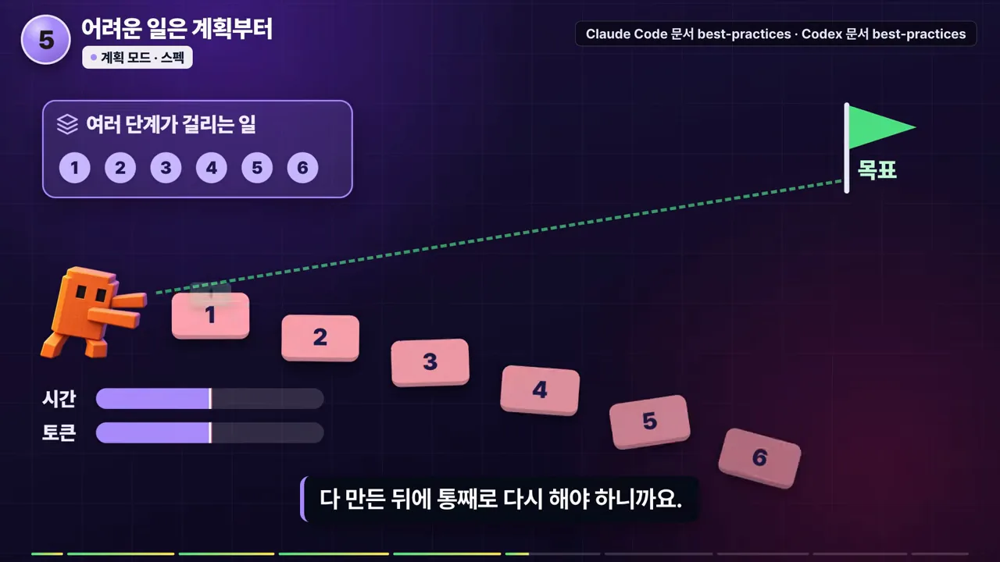
그래서 두 도구 모두 계획 모드가 있어요. 켜면 에이전트가 코드를 고치지 않고 조사와 계획만 내놔요.
생각이 덜 정리됐다면 질문을 받으세요
무엇을 원하는지 나도 아직 모를 땐 거꾸로 에이전트가 묻게 해요. 아래 화면 맨 위 터미널의 한 줄(Interview me until you could write the spec, then write it to SPEC.md.)이 Claude Code 문서에 실린 예시 문장이에요. 에이전트가 '누가 쓰는 기능인가요?', '꼭 지킬 조건은요?', '무엇이 되면 끝인가요?'를 하나씩 묻고, 답이 SPEC.md로 정리돼요. 두 문서에 똑같이 나오는 방법이에요.
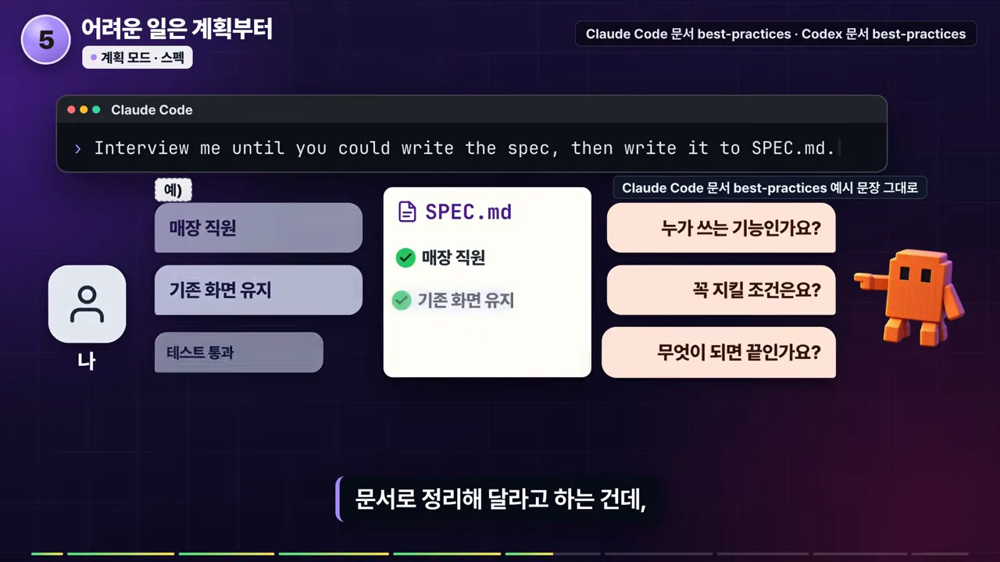
Anthropic은 그렇게 만든 문서를 들고 새 대화에서 작업을 시작하라고 해요. 끝났다는 기준이 글로 적힌 채 깨끗한 대화에서 출발하는 거예요.
요청에 넣을 네 가지
요청을 쓸 때는 OpenAI가 권하는 네 가지를 넣어 보세요. 아래 화면 왼쪽이 쿠폰 기능을 예로 든 요청서이고, 오른쪽이 Codex 문서의 원문이에요. 맨 아래 '끝나는 기준' 칸은 비어 있는데, 영상이 가장 강조하는 칸이라 일부러 비워 둔 거예요.
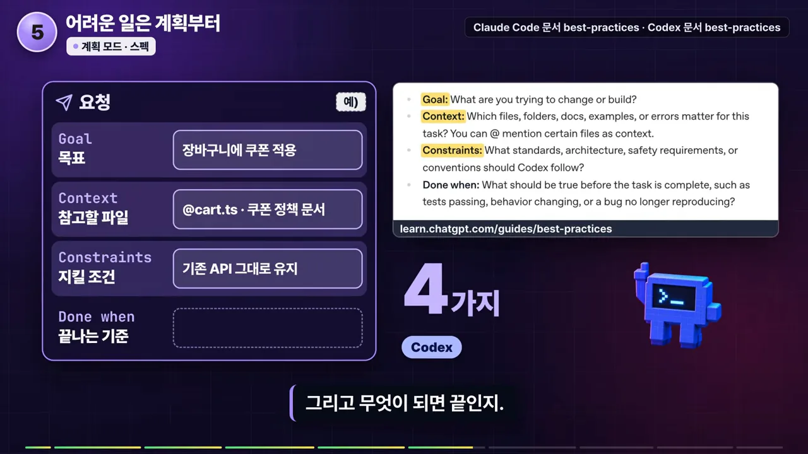
계획 모드를 켜는 방법은 도구마다 달라요. Claude Code는 Shift+Tab을 누르면 화면 아래쪽처럼 'plan mode on'이 표시되고, Codex는 /plan을 입력해요.
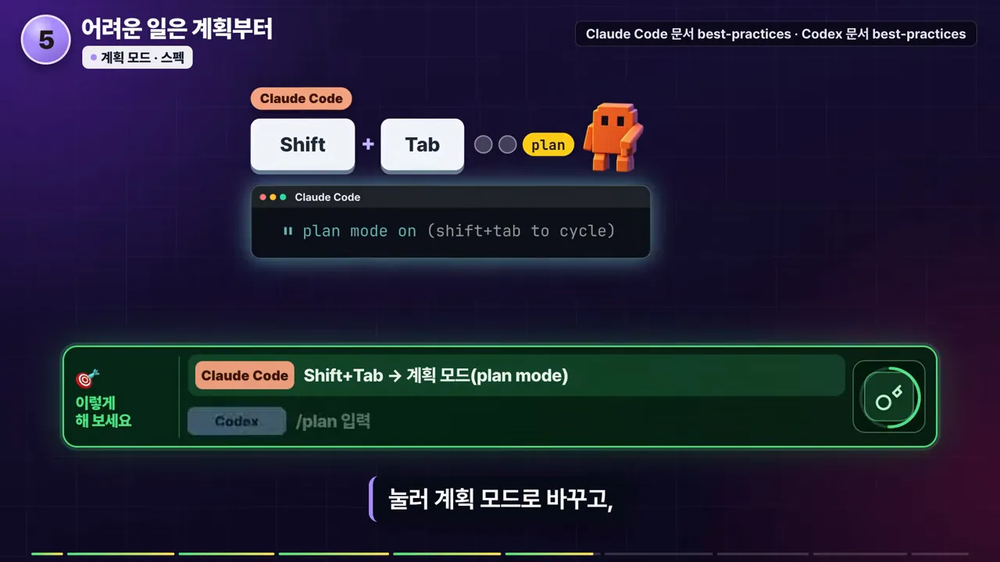
Shift+Tab은 모드를 돌려 가며 바꾸는 키라, 'plan mode on'이 보일 때까지 눌러요. 영상 05:37에서 보기⑥ 스스로 확인할 수단 주기
에이전트는 작업이 다 된 것처럼 보이면 멈춰요. 제대로 됐는지 실행해 볼 방법이 없으면 '그럴듯해 보인다'가 기준의 전부예요. 아래 화면에서 에이전트는 '다 됐어요'라고 하지만 주문 화면의 할인 칸에는 숨은 오류가 있어요. 그걸 찾아내는 건 오른쪽 '내가 직접' 목록, 즉 사람이에요. Anthropic 표현으로는 내가 테스트 도구가 되는 거예요.
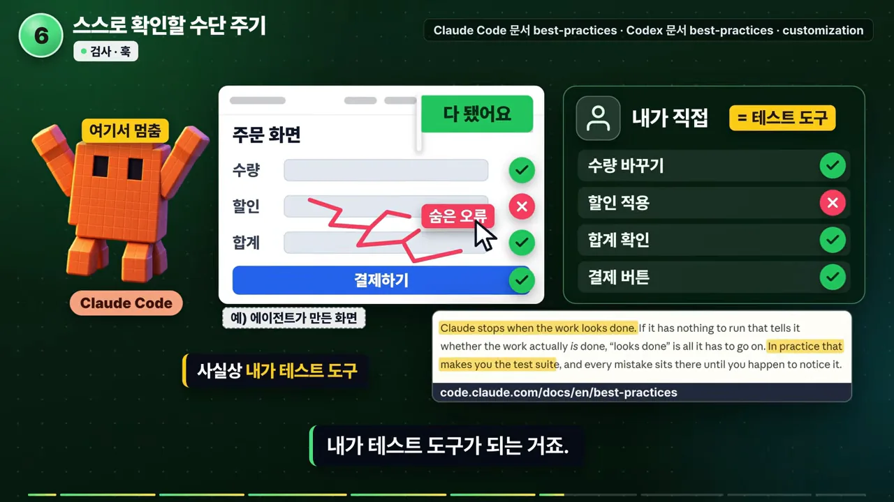
통과인지 실패인지 답이 나오는 검사를 쥐여 주면 달라져요. 아래 화면의 고침 → 검사 실행 → 결과 → 결과 읽기 고리를 에이전트가 사람 없이 혼자 돌아요. 가운데 order.js는 2바퀴째에 통과했어요.
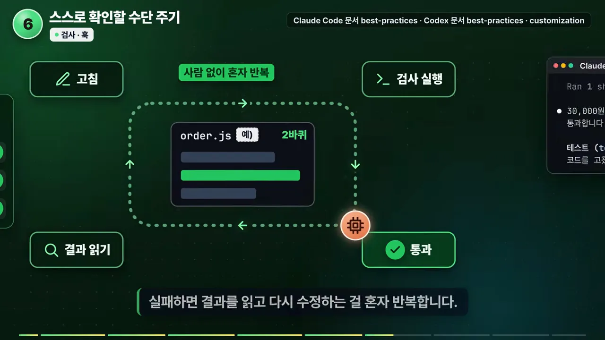
검사가 꼭 테스트 코드일 필요는 없어요. 아래 화면의 세 칸처럼 테스트 코드, 빌드가 되는지, 화면 캡처를 시안 옆에 놓고 비교하는 것 모두 검사가 돼요. OpenAI도 같은 말을 해요. Codex가 이 과정을 대신할 수 있지만, 무엇이 좋은 결과인지 알 때만 가능하대요.
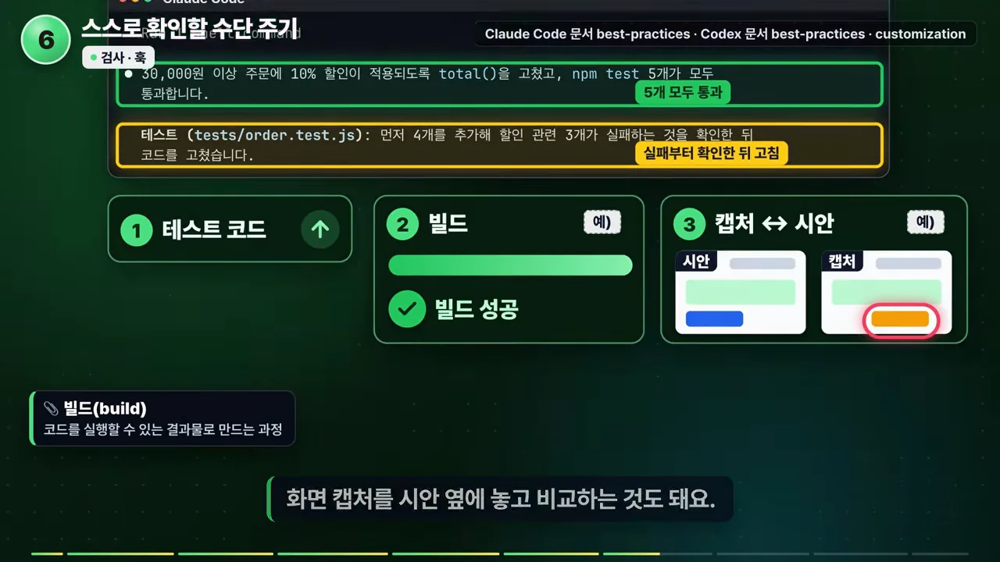
예외 없는 규칙은 장치로
규칙 파일은 참고 사항이에요. 에이전트가 상황을 보고 안 따를 수도 있어요. 아래 화면에서 위쪽 '규칙 파일' 줄은 에이전트가 그냥 지나갈 수 있지만, 아래쪽 '훅·자동 검사' 줄에는 차단기가 있어서 매번 멈춰요. 예외 없이 지켜야 하는 규칙은 이렇게 매번 강제로 실행되는 장치에 넣으라는 게 두 회사의 공통 조언이에요.
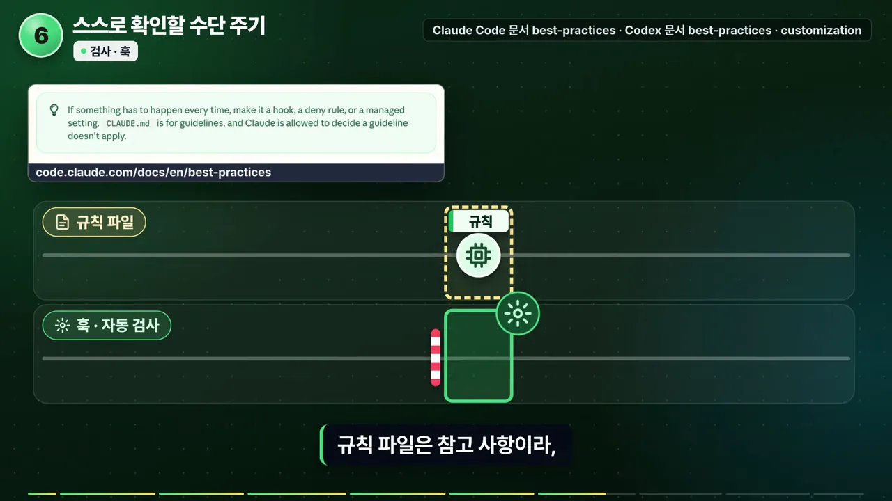
- Claude Code: 검사를 실행하는 명령(
npm test)을CLAUDE.md에 한 줄 적어 둬요. - Codex: 요청할 때 '무엇이 되면 끝인지(Done when)'를 함께 적어요.
⑦ 지켜보지 말고 나란히
OpenAI가 꼽은 흔한 실수 중 하나는 Codex를 한 단계씩 지켜봐야 하는 도구처럼 다루는 거예요. 아래 화면 위쪽 형광펜 줄이 그 문장이에요. Codex가 파일 읽기, 코드 수정, 테스트 실행을 하는 동안 내가 눈만 뜨고 쳐다보면, 오른쪽 '내 할 일'은 멈춰 있어요.
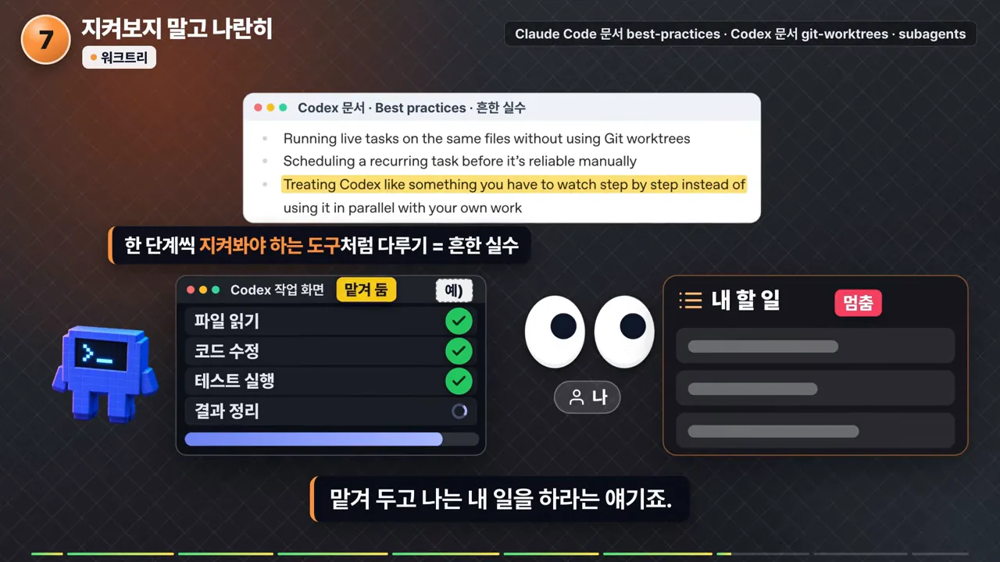
워크트리로 나란히 돌려요
한 걸음 더 가면 에이전트 여러 개를 동시에 돌릴 수 있어요. 다만 한 폴더에서 둘이 같은 파일을 고치면 서로 덮어써요. 그래서 두 도구 모두 워크트리를 써요. 아래 화면처럼 저장소 하나에서 작업 폴더 1, 2, 3을 꺼내고, 에이전트마다 자기 폴더의 order.js를 고쳐요.
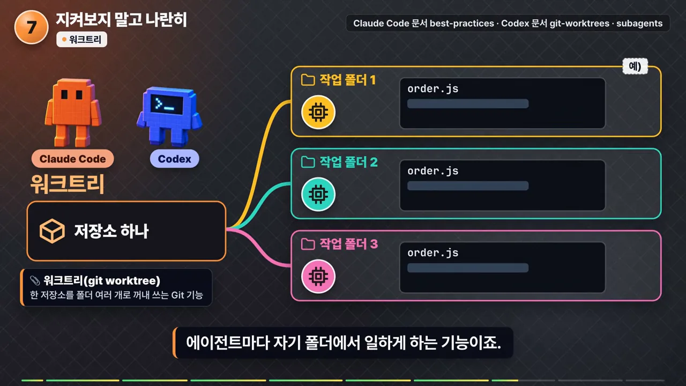
두 번째 대화는 검토자로
두 번째 대화는 검토용으로도 쓸 만해요. 아래 화면 왼쪽 첫 번째 대화가 만들고, 오른쪽 두 번째 대화는 만든 과정을 보지 않은 채 결과물만 놓고 지적 1, 지적 2를 내요. 아래 인용문은 이게 '가장 쉬운 독립 검토자'라는 Claude Code 문서 문장이에요.
주의할 점 두 가지
첫째, 에이전트를 여러 개 띄우면 그만큼 토큰을 더 써요. 아래 화면처럼 4개를 띄우면 토큰 막대도 4줄이에요.
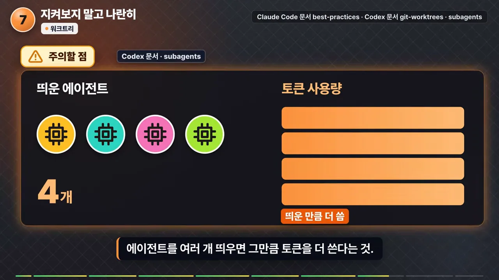
둘째, 같은 일을 서브에이전트에게 넘긴다고 답이 더 좋아지진 않아요. 아래 화면에서 직접 하기와 서브에이전트의 막대 높이가 같고, 가운데에 '답 품질 그대로'라고 적혀 있어요. 서브에이전트는 조사나 테스트처럼 읽기 위주인 일을 나눌 때 잘 맞아요.
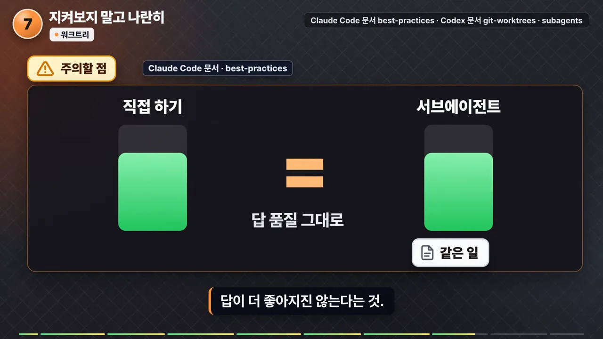
워크트리를 여는 방법은 이래요. Claude Code는 실행할 때 claude -w feature-auth처럼 워크트리 옵션을 붙이고, Codex는 앱에서 새 대화를 만들 때 Worktree를 골라요. 아래 화면 왼쪽에 '새 워크트리' feature-auth 폴더가 생긴 모습이 보여요.
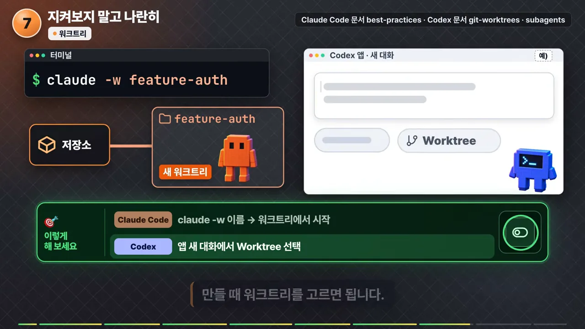
이제 안 해도 되는 것, 그리고 정리
마지막은 반대 방향이에요. 예전엔 요령으로 통했지만 이제는 안 해도 된다고 문서가 직접 밝힌 것들이에요. Anthropic 문서에는 'What you can stop doing'이라는 표로 아예 정리돼 있어요. 아래 화면 왼쪽이 그 표이고, 오른쪽은 IMPORTANT!!! NEVER EDIT src/gen/ !!!처럼 대문자를 쌓은 CLAUDE.md 예시예요.
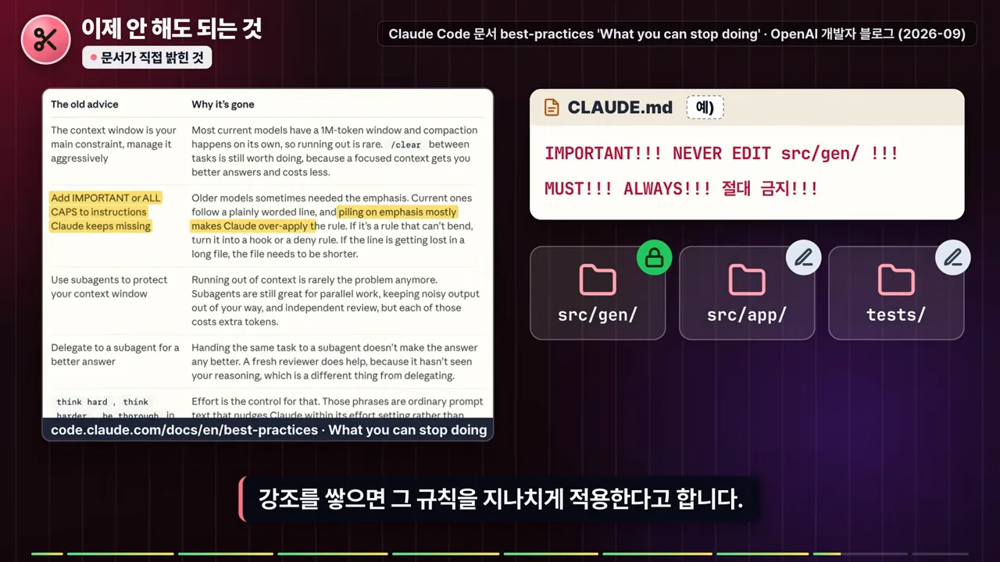
영상이 표에서 고른 세 줄은 이래요.
| 예전 요령 | 이제 안 해도 되는 이유 |
|---|---|
| 놓치면 안 되는 지시에 대문자로 'IMPORTANT' 붙이기 | 요즘 모델은 평범하게 쓴 한 줄도 잘 따르고, 강조를 쌓으면 규칙을 지나치게 적용해요 |
| '깊게 생각해', '꼼꼼히 해' | 지금은 생각 깊이(effort) 설정이 그 역할을 해요 |
| '멈추지 말고 끝까지 해' | 필요 이상으로 작업을 키울 가능성이 더 커요 |
아래 화면은 표에서 'think hard' 줄과 'Effort is the control for that' 문장에 형광펜을 칠한 모습이에요. 오른쪽 '내 요청'에는 '버튼 색만 바꿔 줘'라는 짧은 요청이 있어요. 이런 일에 '끝까지 해'를 덧붙이면 오히려 일을 키워요.
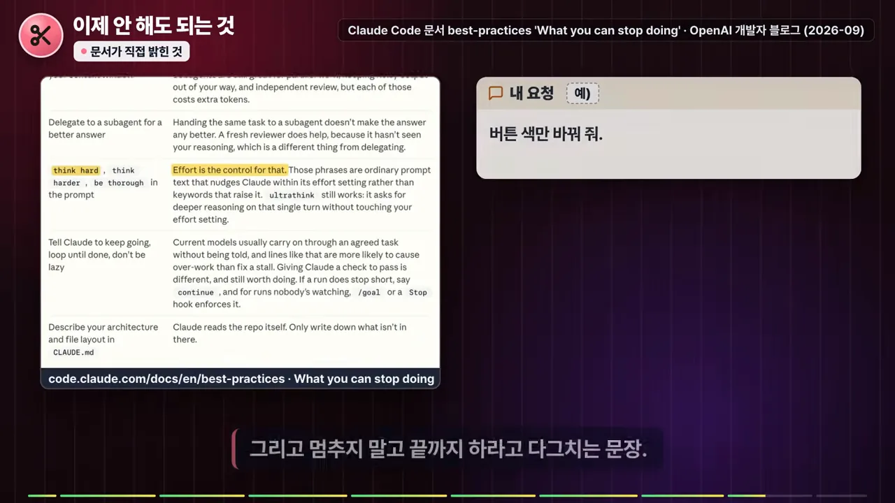
OpenAI 개발자 블로그도 같은 얘기를 해요. 아래 화면의 인용문처럼, 예전 모델은 테스트를 돌리라고 따로 시켜야 했지만 GPT-6 Astra는 알아서 해요. 같은 지시가 남아 있으면 '최신 모델' 줄처럼 불필요한 테스트만 늘어나요.
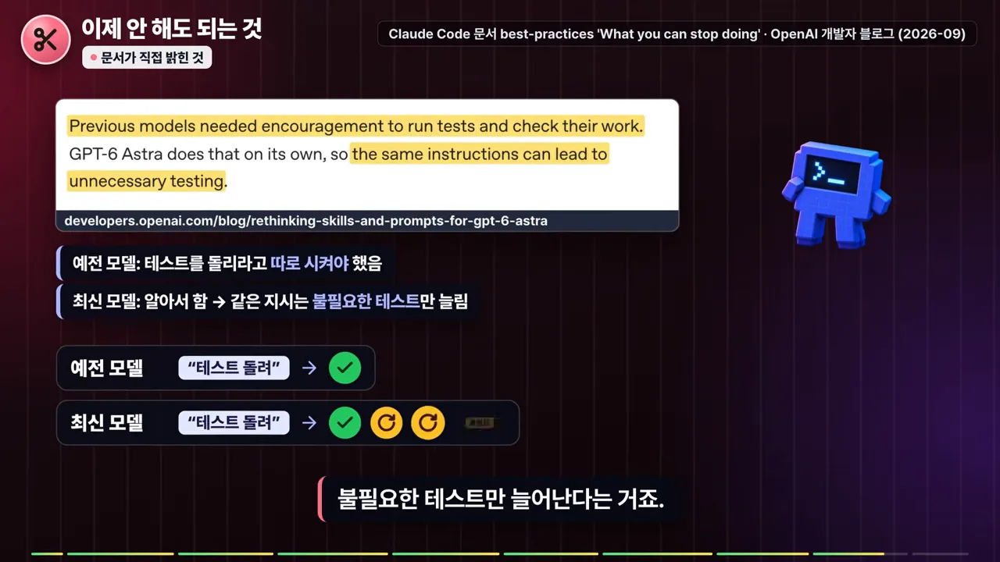
일곱 가지 한눈에 보기
영상 끝에서 일곱 가지를 한 화면에 모아요. 아래 표는 그 일곱 줄에 영상이 단계마다 준 '이렇게 해 보세요'를 붙인 거예요.
| 원칙 | Claude Code | Codex |
|---|---|---|
| ① 하던 일은 이어서, 모델은 처음에 | 세션 시작할 때 /model로 정하기 | 대화 도중 모델·권한 설정 바꾸지 않기 |
| ② 대화 하나에 일 하나 | 일이 바뀌면 /clear | /new로 새 대화 |
| ③ 규칙 파일은 짧게 | /init으로 초안 → 필요 없는 줄 지우기 | 같은 실수 두 번 → AGENTS.md에 한 줄 |
| ④ 설정과 지식은 저장소 안 파일로 | CLAUDE.md + .claude/settings.json부터 | AGENTS.md 하나부터 |
| ⑤ 어려운 일은 계획부터 | Shift+Tab → 계획 모드 | /plan 입력 |
| ⑥ 스스로 확인할 검사 주기 | 검사 실행 명령을 CLAUDE.md에 한 줄 | 요청에 Done when(끝나는 기준) 적기 |
| ⑦ 지켜보지 말고 나란히 | claude -w 이름 → 워크트리에서 시작 | 앱 새 대화에서 Worktree 선택 |
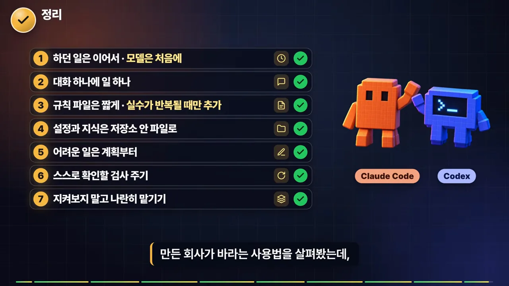
영상은 Anthropic 문서의 첫 줄이 이 모든 걸 한 문장으로 요약한다며 끝맺어요. 아래 화면의 그 문장이에요.
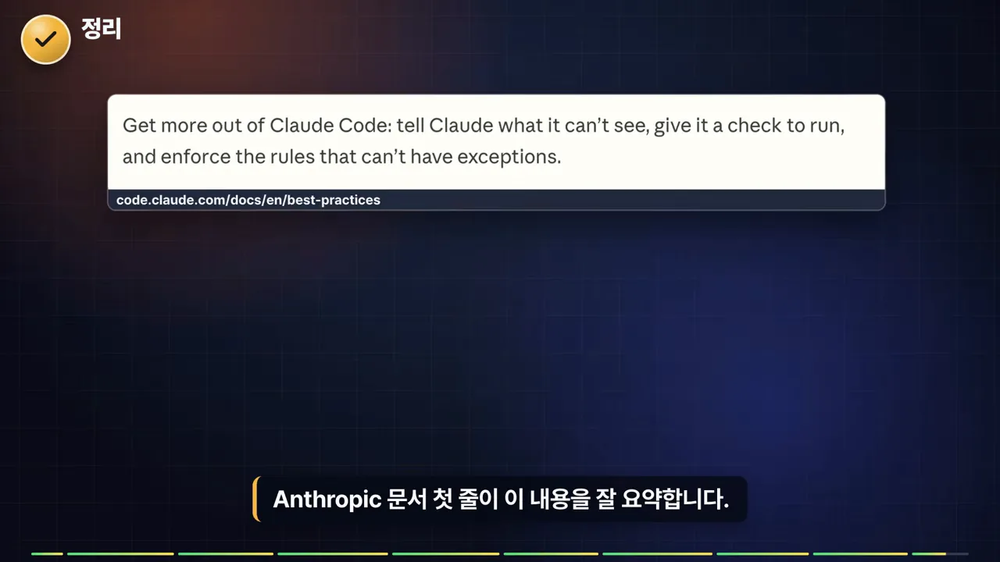
에이전트가 볼 수 없는 건 알려주고 확인할 검사를 주고 예외 없는 규칙은 장치로 강제하라.
— 영상 08:53